Overview
A dropdown control allows users to select a single option from a list of predetermined options which drop down.
To add this control in the DynaForm, go to the control toolbox at the left side of the DynaForm designer, drag and drop the following icon:

When adding this control to the designer, it is possible to relate it to a variable with options created or a variable that retrieves data from a SQL query as explained in this section. The data of the variable will be shown when clicking on the down arrow of the control. If the options of the dropdown are retrieved from a SQL query, the options will not be retrieved inside the designer. The options of the dropdown are shown only when the DynaForm is rendered inside the "Preview" and when running a case. A dropdown control whose options are retrieved from the iso_country table looks similar to:
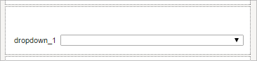
When running a case:
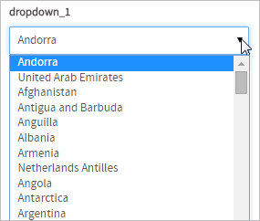
Dropdown boxes are used because they save space, but they do not allow multiple selections and the user is forced to use the mouse to display the list of available options.
An option can be selected by clicking once on the dropdown box to display the list of options and then clicking a second time on the option to be selected. Alternatively, an option can be selected by holding down on the right mouse button to display the list and then moving the mouse cursor to an option and releasing the mouse mouse.
To select an option with the keyboard, use the TAB or SHIFT+TAB to bring the focus to the dropdown box. Press the UP or LEFT arrow key to select the previous option in the list. Press the DOWN or RIGHT arrow key to select the next option in the list. Press HOME to select the first option in the list and END to select the last option. Pressing a letter or number key will move the selection to the first option whose label starts with that letter or number. Pressing the same letter or number again moves to subsequent options starting with that letter or number. There is no way to display the list of options with the keyboard, but once the list is displayed with a single click, the keyboard can be used to move the selection. To select the current option and hide the list, press ENTER or TAB.
Managing Dropdowns
After adding the control to a form design, it is mandatory to set its properties in order to give it functionality in regards to its behavior, appearance and the data shown in its options. To do this, click on the control and go to the left panel where its properties are shown:
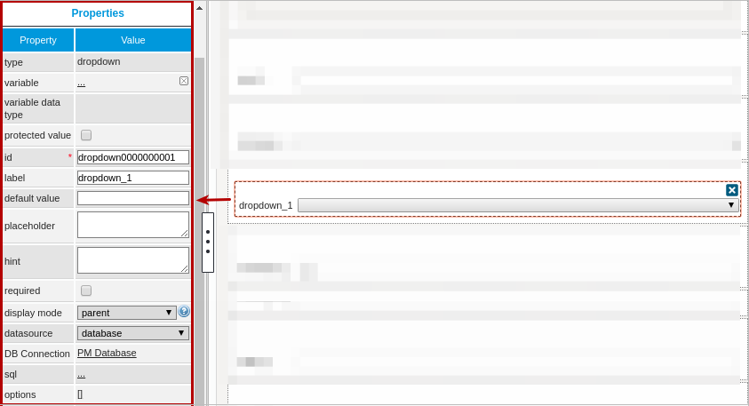
The properties set by default are the following:
- type Set by default as "
dropdown". This definition can not be modified. id Set by default as
dropdown000000000Xwhere "X" represents the corresponding numbering of the control in the design. This numbering starts in 1. After a variable is related to this control, the ID changes to the name of the variable, nevertheless it is possible to set a new ID to work with the control.- label Set by default as "
dropdown_X" where "X" represents the corresponding numbering of the control in the design. This numbering starts in 1. - display mode Set by default as "
parent". See this documentation for more information of the modes available for this control. - datasource Available Version: ProcessMaker 3.0.1.8 and on.
Set by default as "database". See this documentation for more information of the data source available for this control. - DB connectionSet by default to "
PM Database". Take into account that if no SQL query is defined in the "sql" property, then no execution will be done. Also, when a variable is related to this control which has its own definition of the connection to a database (an external database or the ProcessMaker'sworkflowdatabase) this property inherits the definition of the variable related in the control.
Dropdown Control Properties
The properties related to this control are the following:
| Property | Description |
|---|---|
| Type | dropdown (readonly) |
| Variable | Click on the ... option to select the variable from the list of available variables. Check this section to learn more of how to relate a variable to a control. Only variables of the following data types can be selected:
Note: Take into account that from version 3.0.1.5 the |
| Variable Data type | Data type of the variable related to the control (readonly). |
| Protected Value | Available Version: ProcessMaker 3.0.1.8 and on. This property protects the information stored in variables. The assigned variable won't be able to be modified or changed in any way, protecting the variable value. |
| ID | [Required] Field and HTML unique identifier. |
| Label | The label of the control |
| Default Value | Value set by default when the value retrieved is null.
To learn more about default values, null values and some other considerations for this property in this control, take a look at this documentation. |
| Placeholder | Set the text in this property that will be shown in gray on the Dynaform to help the user fill in the field. |
| Hint | Used to show help when the dropdown is rendered. It is shown when the pointer of the mouse is hovered over the ? icon. |
| Required | By checking this option, an asterisk is added in the label to indicate that the field is required. It means that an option must be selected mandatorily from the control. |
| Display Mode | [Required] Display mode:
|
| Datasource | Available Version: ProcessMaker 3.0.1.8 and on. The data source for the list of available options:
|
| DB Connection | If the options of the dropdown will be retrieved from a database, select from the dropdown of this property the database connection that will be used (the connection must be already created in the process, check this section to learn more about it). |
| SQL | Insert in this property, the SQL query to populate the option of the control from database. The data retrieved from the query defines the domain of options available for the control. The dropdown control requires two parameters: KEY and LABEL. SELECT Field_Key, Field_Label FROM TABLE Note: The * identifier is not supported in SQL queries. Note: Until ProcessMaker 3.0.1.7, if the SQL Query selects only one parameter, the same parameter will be assigned as the KEY and the LABEL. |
| Data Variable | Available Version: ProcessMaker 3.0.1.8 and on. Assign the array variable using the @@ button.
|
| Options | Define in this property the options that are used to define the value used in the field. It is possible to set this property even if the SQL property is already defined, in both cases the data defines the domain of options for the control.
To learn how this property works with values retrieved from the options, take a look at this documentation. |

Setting Dependent Fields
Note: From version 3.0.1.1 the "Dependent fields" property is no longer available. To set the dependency, simply work with the queries of the variables assigned to the controls and the variables that set the dependency (Check the example of this section).
Dropdowns can be set as dependent fields of other fields based on their states and values.
In order to establish this dependency the variables should normally be defined with a SQL SELECT statement to populate the fields with values from a database, which will be shown once the DynaForm is rendering in the preview or running the form.
For example, for the country-state-location dependency, let's add three dropdowns in the DynaForm designer and relate then to the variables COUNTRIES, SUBDIVISION and LOCATION.
The COUNTRIES variable and has the following SQL sentence:
Note: The * identifier is not supported in SQL queries.
The SUBDIVISION variable has the SQL sentence:
WHERE ic_uid = "@#COUNTRIES" ORDER BY is_name
And for the LOCATION variable:
WHERE ic_uid= "@#COUNTRIES" AND is_uid= "@#SUBDIVISION"
Note: Take into account these typing rules to use case variables in the queries.
For the dependency and correct retrieve of the data the query must be case sensitive. It means that if the name of the table or the name of the fields contain uppercase or lowercase letters in the database, the query mandatorily must have the same considerations.
Then, relate each dropdown added in the form to the COUNTRIES, SUBDIVISION and LOCATION variables. The dependency will be set automatically.
When rendering the form, to obtain the following result:.
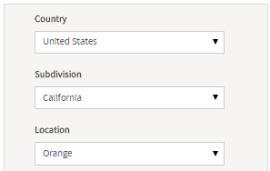
Let's check the dependency:
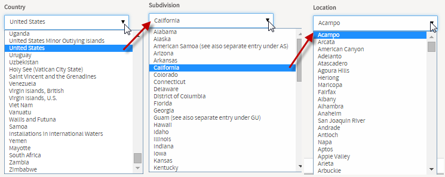
If having problems setting the dependent fields, take into account the following
- The name of the variables may have not respected the name of the fields or the table set in the database (since the query must be case sensitive).
- The dependency of the controls may have not been set correctly.
- Take into account that
"ic_uid="@#COUNTRIES""does not retrieve any data when executing the queries. There must be a blank space between the equal symbol and the variables so that the correct expression should be"ic_uid = "@#COUNTRIES""
Note: Dependent fields are not available when a control is set in view mode.
Dropdown Control Example
For this example add a "Dropdown" control by dragging and dropping it into the Dynaform Designer.
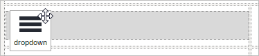
After adding the control the Create Variable window will pop up immediately. Create a new variable or select a variable already created. For this example create a variable named "country", type string. Finish creating the variable by clicking on the "Save" button.

Now, display the properties of the control by clicking on any empty space of the control and its properties will be displayed on the left hand panel.
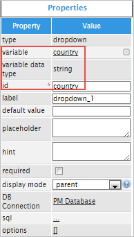
For this case change the "label" property to "Country:".
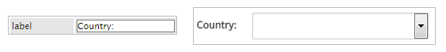
The next property is "default value" it is not advisable to add a value by default in a dropdown because it will loose the function of the control. Like in the example add the text "CHOOSE ONE" which will be the default value and will only show this text.
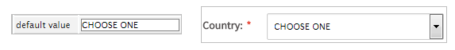
The "placeholder" property will show help text that is displayed when no option is selected. For example, add "Select your country." and this will be shown inside the control to provide guidance for the user. Once an option is selected the placeholder will disappear.
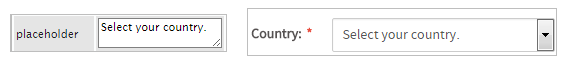
Another way to show help is adding text in the "hint" property. The hint will be shown in an icon placed in the right side corner of the control.
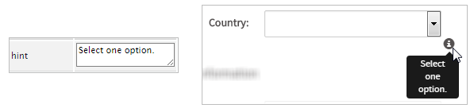
Click on the "required" property to add an asterisk in the label to indicate that the field is required.
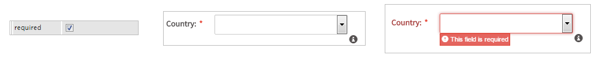
The next property is "display mode" which has different options to give functionality to the control. Observe the image below:
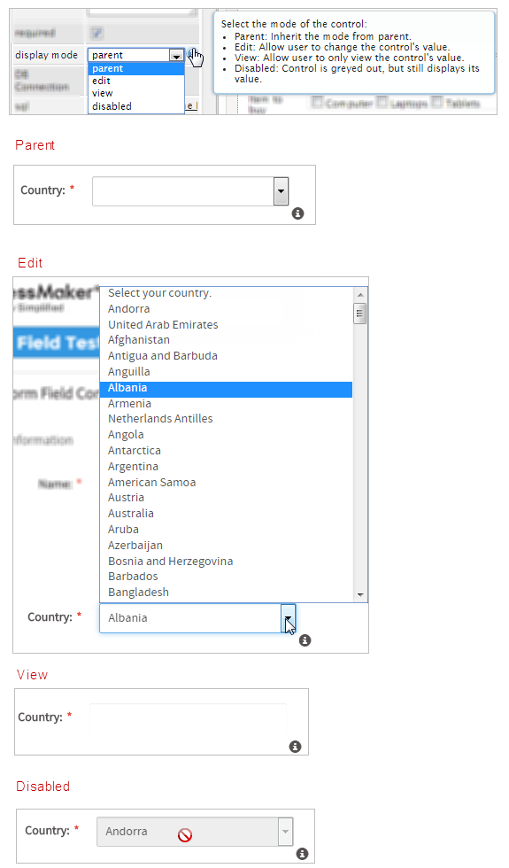
Now for the "DB Connection" property it has a database selected from a list of database connections defined in the process objects. Click on the "sql" property to add code and therefore populate the dropdown. Add the following code:
Note: The * identifier is not supported in SQL queries.
The code added will populate the dropdown with a list of countries as seen in the image below. Take into consideration that if the "default value" property has been used then the dropdown will not use the query and therefore will not call the sentence.
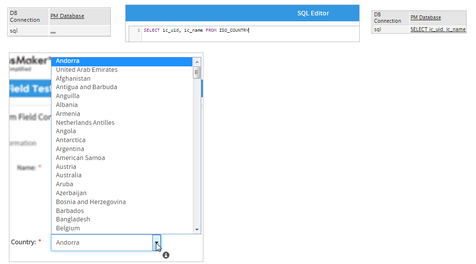
Finally, the "options" property will populate the dropdown manually, meaning that the user will add the specific options he/she needs. To do so, click on the underlined brackets [] and a new window will open. Click on the "Create" button to start adding options, notice that when the button is clicked it will immediately start a new key and label.
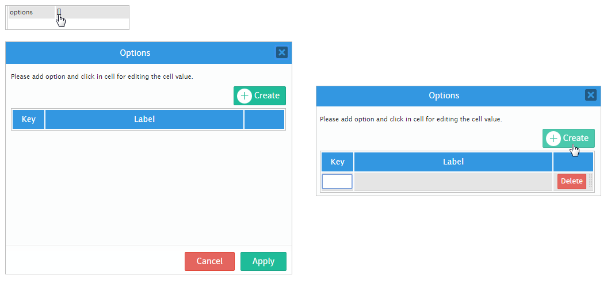
For this example add two options: "No" and "Yes". To add a new option click on the "Create" button once again.

Once both options have been added click on the "Apply" button. When running a case the control will be populated with the options "No" and "Yes".
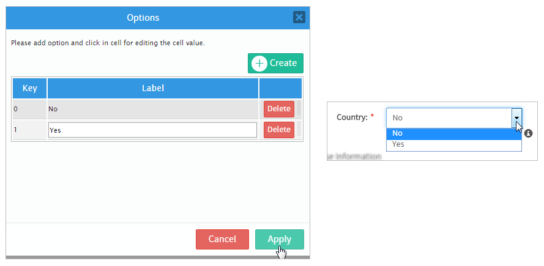
JavaScript in Dropdowns
To learn how to manage DynaForm fields using JavaScript, see JavaScript in DynaForms.
Dropdowns in ProcessMaker 3 have the following field components:
- Label: The text displayed above or to the left of the field to identify it to the user.
- Text: The text (label) displayed for the selected option.
- Value: The stored value (key) for the selected option.
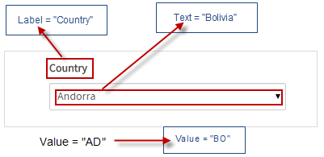
JavaScript Methods
Some of the JavaScript methods to manipulate dropdown boxes include:
| Method | Description |
|---|---|
jQuery("#fieldID").getControl() |
Use this function to obtain the control's input field, rather its DIV which is obtained with |
jQuery("#fieldID").disableValidation() |
Disable the validation of the field, so it doesn't check whether the field is required when the form is submitted. |
jQuery("#fieldID").enableValidation() |
Enable validation of the field, so it will check whether the field is required when the form is submitted. |
jQuery("#fieldID").getValue() |
Returns the value (key) of the dropdown's selected option. |
jQuery("#fieldID").getText() |
Returns the displayed text (label) of the dropdown's selected option. |
jQuery("#fieldID").getLabel() |
Returns the field's label, which is the text displayed above or to the left of the field to identify it. |
jQuery("#fieldID").setValue("newValue") |
Selects an option in the dropdown by specifying its value (key). |
jQuery("#fieldID").setText("newText") |
Selects an option in the dropdown by specifying its displayed text (label). |
jQuery("#fieldID").setLabel("newLabel")
|
Change the field's label, which is the text displayed above or to the left of the field to identify it. |
jQuery("#fieldID").setOnchange(function(newVal, oldVal){...}) |
Define a change event handler, which is a custom function that executes after the value of the field changes. The function may contain the following parameters:
|
To see code examples for these methods, see JavaScript Functions and Methods.
Multi-select Listbox
JavaScript can be used to convert a dropdown box which only allows one option to be selected to a listbox which allows multiple options to be selected. The following command converts a dropdown to a listbox:
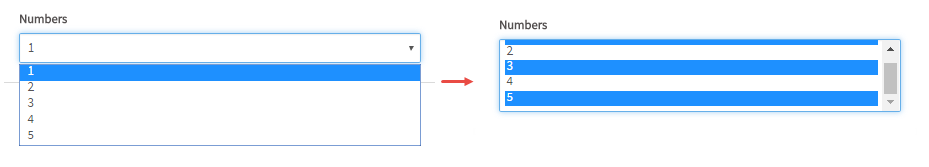
The problem is that when the listbox is submitted, it will only hold the value of the last selection in the listbox, so a hidden field also needs to be added to the DynaForm to hold the values of all the selected options. Then, a change event handler can be added to the listbox to store what is selected in the hidden field in a JSON string.
Example:
First, create a normal dropdown box with the ID "howContact" which selects multiple ways to contact a client. Then, add a hidden field with the ID "howContactSaved". Both fields are associated with string variables with the same names as their IDs.
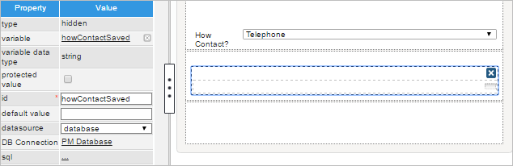
Then, add the following JavaScript to the DynaForm:
$("#howContact").getControl().parent().append("<p>Press the CTRL key while clicking to select multiple items.</p>");
//if showing a second time, get saved selections and apply them to the listbox:
var vals = $("#howContactSaved").getValue();
if (vals.trim() != "") {
var aVals = $.parseJSON(vals);
var fld = $("#howContact").getControl()[0];
fld.selectedIndex = -1; //clear current selection
for (var i = 0; i < aVals.length; i++) {
for (var j = 0; j < fld.options.length; j++) {
if (aVals[i] == fld.options[j].value)
fld.options[j].selected = true;
}
}
}
//change event handler for listbox to copy selected values into an array and save it in the hidden field
$("#howContact").getControl().change(function() {
var aVals = [];
for (var i = 0; i < this.options.length; i++) {
if (this.options[i].selected)
aVals.push(this.options[i].value);
}
$("#howContactSaved").setValue(JSON.stringify(aVals));
} );
The first two lines of code convert the "howContact" dropdown into a listbox and add a helpful message below the list box, informing the user to hold down on the CTRL key while clicking to select multiple items in the listbox:
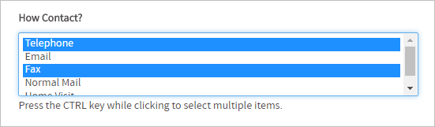
By default most browsers will only show 4 or 5 options at a time. If wishing to show more options, then increase the height of the listbox:
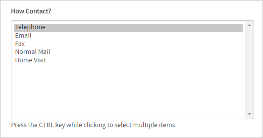
The next part of the code checks if there are saved values for the listbox in the hidden field. If so, it converts from a JSON string to an array of values. Then it loops through the array and sets the value in the listbox. To select an option, it searches through all the options in the listbox for one with a matching value and then sets its select property to true.
The last section of the code is the change event handler which is executed after the user selects or deselects an option in the listbox. This event handler creates an array to hold the values of the selected options. It loops through the options and checks whether their selected properties are true, and then adds their value to the array. Then, it converts the array to a JSON string so it can be stored in a normal string variable and assigns it to the hidden field.
Add these two fields and this JavaScript code to every DynaForm which will use the listbox. If a case is run with the Debugger activated, the JSON string holding the values of the selected options can be seen in the "howContactStored" variable:
Disabling options in dropdown boxes
Options can be disabled in a dropdown box by using setting the disabled property of options to a value of "disabled". For example, a dropdown box with the ID "selectCountry" has an option with an option with a value of "MX" and a label of "Mexico". The following JavaScript code disables this option in the dropdown box:
Remember that disabling an option does not change its currently selected option, but is does prevent the user from selecting that option in the future. Use control.setValue() to select a different option.
In the following example, a dynaform has two dropdown boxes with the IDs "selectService1" and "selectService2".
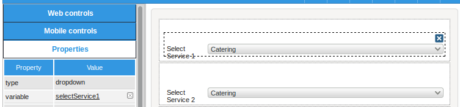
These dropdowns both have the same list of options:
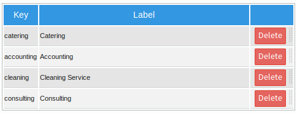
When a service is selected in the first dropdown box, it should be disabled in the second dropdown box, so the user can't select it.
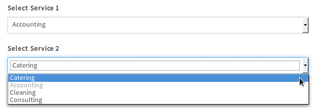
The JavaScript code uses the control.setOnchange() method for the first dropdown to disable the option in the second dropdown. If the second dropdown box has selected the disabled option, then the code automatically selects the first available option.
//disable the new selected option in the second dropdown:
$("#selectService2").find("option[value="+newVal+"]").attr("disabled", "disabled");
if (oldVal) {
//reenable the old selected option in the second dropdown:
$("#selectService2").find("option[value="+oldVal+"]").attr("disabled", false);
}
//select a different option if the disabled option is selected
if ($("#selectService2").getValue() == newVal) {
var aOptions = $("#selectService2").getInfo().options;
for (i=0; i < aOptions.length; i++) {
if (aOptions[i].value != newVal) {
$("#selectService2").setValue(aOptions[i].value);
break;
}
}
}
}
$("#selectService1").setOnchange(disableOption); //when value changes in first dropdown
disableOption( $("#selectService1").getValue(), null ); //disable option when dynaform loads